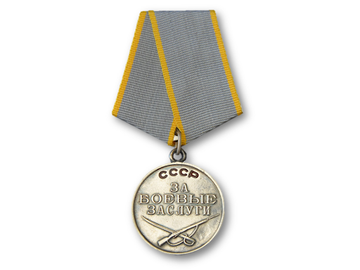
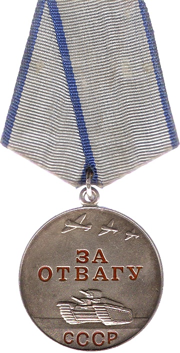
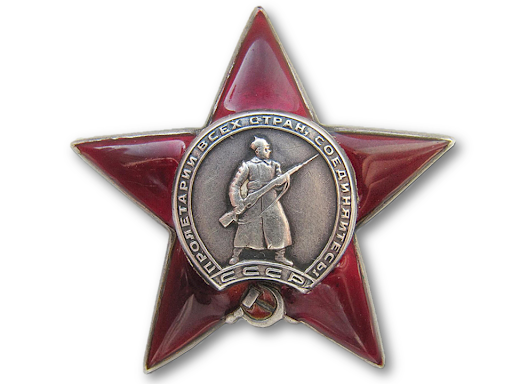
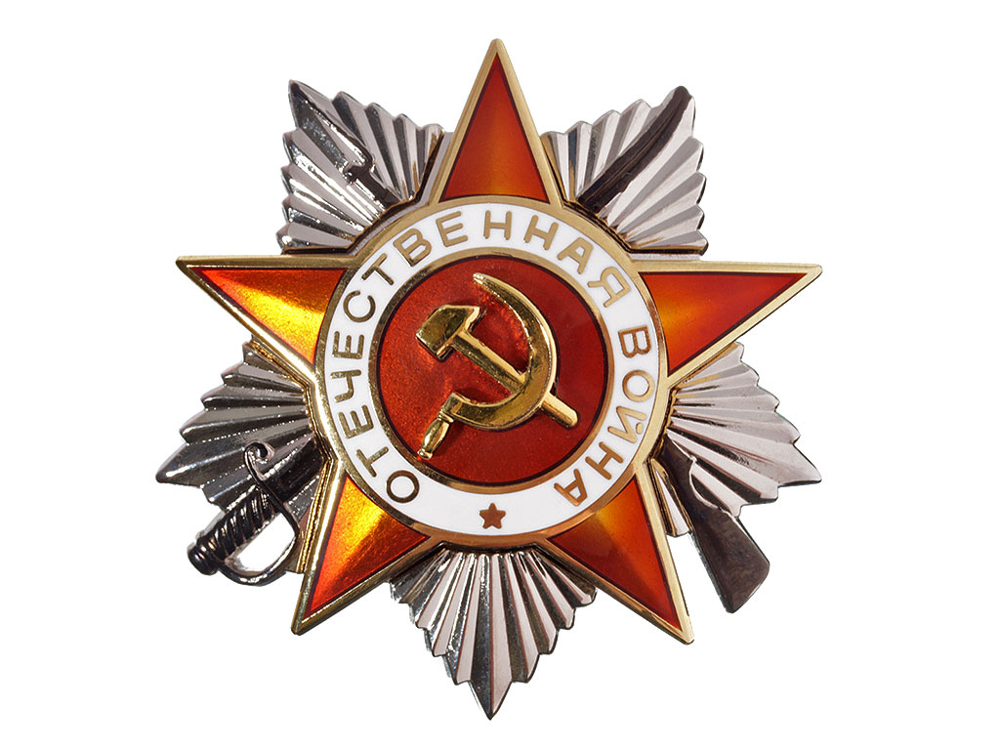

Усманов Умар награжден за то, что он в период наступательных боев с 4 по 6.01.1944 года своевременно обнаружил наблюдательный пункт и 3 пулеметных точки противника, которые были подалены огнем нашей артеллерии что способствовало продвижению нашей пехоты.
Медаль «За отвагу»

Усманов Умар награжден за то,что обнаружил 4 пулеметных точки, одно противотанковые орудие, которые были уничтожены огнем нашей артиллерии, что способствовало продвижению нашей пехоты.
Орден Красной Звезды

При прорыве обороны противника на реке Друть 24.06.1944 года была сильно побита кабельная линия, осколком повреждена радиостанция, срочно требовался огонь на уничтожение огневых точек противника. Рискуя жизнью товарищ Усманов под артиллерийским и пулеметным огнем противника в плавь через реку понес письменное донесение командиру дивизиона, которое доставил в ранее намеченный срок. На обратном пути востоновил 3 повреждения линии связи. После нашей артиллерийской подготовки оживились некоторые огневые средства противника мещающие продвижению нашей пехоты. Товарищ Усманов находясь в передовых рядах настпующей пехоты своим наблюдением обнаружил 3 станковых пулемета, одно орудие, стоящее на прямой наводке. Точным целеуказанием огневых стредств противника командиру батареи.Последний огнем своей артиллерии, уничтожил 3 станковых пулемета и орудие, что дало возможность продвижению нашей пехоты.
Орден Красной Звезды
Товарищ Усманов примерный, дисциплинированный и отважный разведчик. В боях за м.Кареличи товарищ Усманов выдвинулся вперед до самой передовой линии противника и обнаружил 3 орудейную батарею противника, из которых одно орудие было уничтожено полностью с расчетом, а два другие были подавлены, что дало возможность быстро продвинуться нашей пехоты.
В боях за г.Белоситок в районе д.Зельоно во время контратаки противника 25.07.1944 году товарищ Усманов, находясь на передовом наблюдательном пункте с пехотой нашел на поле боя трафейный пулемет, выдвинулся вперед о огнем из этого пулемета отбивал контратаки немцев. Затем продвинулся вперед и встретился с 4 немцами, из которых трех убил, а четвертый - унтерофицер, был пленен и доставлен на НП. Товарищ Усманов - один из лучших разведчиков части, бестрашный боец за Родину.
Орден Отечественной войны II степени

Проявил исключительное мужество и отвагу ефрейтор Усманов при прорыве вражеской обороны и в дальнейшых наступительных боях с 14 января 1945года.
16 января 1945 года в районе д.Подуховин (19) противник при поддержке *Устаиков стремился прейти в контратаку, но был своевременно обнаружен ефрейтором Усмановым, который, давая точные целеуказания, способствовал уничтожению 28 солдат и офицеров, 3 станковых и 4 ручных пелеметов, подавлен огонь 105мм арт.батареи противника. 20 января 1945года противник на марше встретил дивизион и контратаковал его в районе деревни Маловидз. Выполняя приказание по разведке противника, товарищ Усманов встретил 3 немцев, которых уничтожил огнем из автомата, а затем, давая точные целеуказания способствовал отбитию контратаку противника.
8 февраля 1945 года противник при поддержке 8 танков и самоходных орудий перешел в ожесточенную контратаку в районе д.Эшнау. Находясь в наступающей роте товарищ Усманов быстро обнаружил огневые точки противника, которые уничтожились огнем дивизиона, контратака была отбита. Противник потерял убитоми 40 солдат и офицеров, 3 станковых пулемета, что способствовало продвижению нашей пехоты.
Орден Отечественной войны II степени
Примеры мужество и отваги показывает своим подчиненным Усманов Умар.
В бою в районе д.Гуссов, находясь на передовом наблюдительном пункте в боевых порядках пехоты, он своевременно обнаружил скопление бронетранспортеров и пехоты противника. Благодаря его точным целеуказаниям скопление было рассеяно. Уничтоженно 45 солдат и офицеров, подбито 2 бронетранспортера. Переместив место наблюдения Усманов обнаружил 2 станковых пулемета. которые были уничтоженны вместе с расчетным огнем нашей артиллерии.
29 апреля противник в районе озеро Хальцерни перешел в контратаку. Отважный разведчик, рискуя своей жизнью, с вершины дерево контратаковал огнем дивизиона, способствуя тем самым отражению контратаки, уничтоженно 35 соладт, 2 станковых и 1 ручного пулемета. При смене места наблюдения он был замечен тремя автоматчиками, которые ведя стрельбу быстро приближались к нему. Гранатой и огнем из автомата он уничтожил двоих, а одного взял в плен.